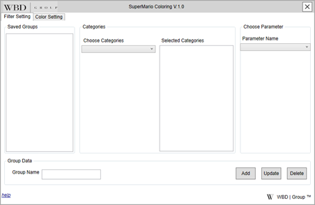
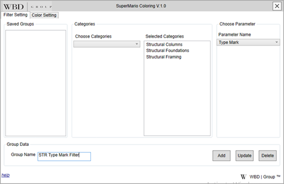
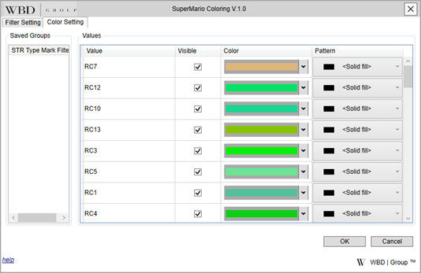
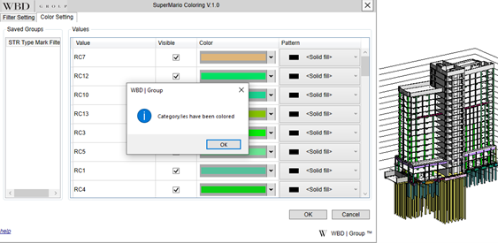

Description
The Visual Classifier Plugin for Revit is a visualization tool that enables users to color-code elements based on parameter values. It helps identify inconsistencies and ensures quick visual feedback across views. Filters and color rules are saved internally for consistent results during project reviews.
Features
- Color-code elements based on parameter values across one or more categories.
- Choose custom colors and patterns for each parameter value.
- Filters are saved and auto-applied in views with matching categories.
- Quickly identify incorrect values or misplaced elements visually.
- Boosts model review efficiency through instant visual feedback.
User Steps
- Download the installer file and double-click it.
- Close Revit if it is running.
- Follow the prompts: Next → Next → Install → Finish.
- Open Revit and navigate to WBD | Plugins.
- Click the Visual Classifier plugin button.
- The plugin will load your model’s patterns and open the main window.

- Go to the Filter Setting tab:
- Select one or more categories to filter by.
- Choose a parameter (only shared/common parameters are listed).
- Name your filter group and press Add.

- Switch to the Color Setting tab:
- Select a saved group from the list.
- The plugin will show values with randomly assigned solid fill colors and patterns.

- Review and confirm the color assignments.

- Click OK to apply color filters. Click Cancel to exit without saving.
Saved Quality
- Identify incorrect values quickly with visual cues.
- Faster model checking and better quality control.
- Consistent filter application across views.
- Maintain high modeling standards throughout the project.
Need Help?
If you need assistance with the Visual Classifier plugin, click below to contact our support team.
Request Help